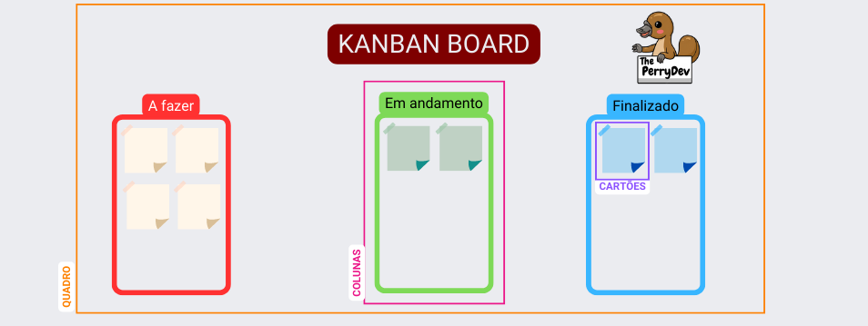

Kanban
Kanban é um sistema visual de gestão de trabalho, que busca conduzir cada tarefa por um fluxo predefinido de trabalho.

1° Passo
Como montar um KANBAN BOARD.
Vamos começar pegando uma folha grande ou uma lousa. Após, monte uma tabela com 4 colunas, sendo:

2° Passo
Separe as tarefas.
Separe alguns post-its e escreva uma atividade da sprint backlog em cada um;

3° Passo:
Separe os post-its nas colunas, conforme o desenvolvimento de cada tarefa.

4° Passo:
Mova os post-its de coluna conforme o desenvolvimento e a conclusão das atividades .
Dicas